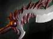
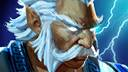
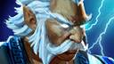

История
Монахи Турстаркури наблюдали за неровными долинами, раскинувшимися под их горным монастырем, в то время, как вторженцы, волна за волной, набегали на стоявшие у подножья королевства. Аскетичные, прагматичные, они пребывали в медитации, не знавшей никаких богов, засев в своем отрешенном от суетного мира высокогорном гнезде. Потом грянул легион Мертвого бога — крестоносцы, уничтожающие все местные культы и заменяющие их своей верой, родом из земель, известных лишь безжалостностью и тысячелетними войнами. Легионы мертвецов осадили Турстаркури. Две недели монастырь едва сдерживал натиск врагов, а те немногие монахи, что решили разузнать, в чем дело, восприняли нападение как попытку бесовских иллюзий отвлечь их от медитации. Они были убиты прямо на своих шелковых подстилках. Выжил лишь один молодой послушник — пилигрим, пришедший в поисках мудрости, но еще не принятый в монастырь. С ужасом он смотрел за тем, как монахи, которым он еще недавно подавал чаи и травы, гибли на своих местах, а потом присоединялись к рядам служителей Мертвого бога. Схватив охапку ценнейших священных писаний, он бежал в более безопасное место, поклявшись не только искоренить армию колдунов Мертвого бога, но и положить конец любой, какой бы то ни было, магии.
Описание
Anti-Mage — это герой с ближним типом атаки, основным атрибутом которого является Agility attribute symbol.png ловкость. Его первая пассивная способность, Mana Break, сжигает ману врага за каждый удар. Mana Break наносит противнику урон в размере 50% от сожженной маны. Вторая способность, Blink, позволяет Anti-Mage телепортироваться на короткое расстояние. Третья способность, Counterspell, увеличивает сопротивление Anti-Mage магическому урону, а также даёт ему возможность блокировать и отразить любое направленное вражеское заклинание. Ультимативная способность, Mana Void, наносит урон цели за каждую отсутствующую у нее единицу маны. Окружающим противникам также наносится урон. Основная цель кратковременно оглушается.
Способности
Mana break
Сжигает ману врага с каждым ударом. Mana Break наносит противнику урон в размере 50% от сожженной маны.
Сжигает маны: 1%/1,8%/2,6%/3,4%
Blink
Телепортация на короткую дистанцию, позволяющая Anti-Mage врываться в схватку и быстро возвращаться назад.
Макс. дальность телепортации: 925/1000/1075/1150
Counterspell
Увеличивает сопротивление магическому урону. Можно применить, чтобы создать вокруг себя противомагический щит, который полностью отражает все направленные заклинания обратно во врага.
Доп. сопротивление магии: 15%/25%/35%/45%
Длительность: 1,2
Mana Void
За каждую отсутствующую у цели единицу маны ей и окружающим противникам наносится урон. Основная цель кратковременно оглушается.
Урон за единицу отсутствующей маны: 0,8/0,95/1,1
Билды
Дефолтный крипчик

-Пт на ловкость
Начинаем собирать бф
- Позже 15=крип

- На скиле

- Ловить лашков
-Хз зачем обычно побеждаю на этом моменте
Билд через радик
-Пт на гениальность
-Чтоб думали что бф
-КАК УЧИЛ СЕРЕГА

-Снять сало

-Крипов шотать с одного ульта

-Kd

-Без вопросов
 
